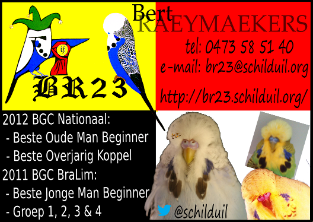

BR23 Show Grasparkieten
Laatste updates
11 DEC 2014: Meer foto's van jongen toegevoegd gisteravond.
08 NOV 2014: Weer een hoop foto's toegevoegd van het begin van het 2015 seizoen.
22 MAY 2014: Een hoop foto's zijn toegevoegd in de gallerij en ook enkele shows.
 Welkom op de BR23 site!
Welkom op de BR23 site!
Over de show grasparkieten van Bert Raeymaekers.
Kwekersklasse: Beginner
Voor wat foto's van mijn vogels kijk je best in de Gallerij
Voor de mutaties in m'n stam zie Mutaties/Kleuren
Als je wil weten wat ik al gewonnen heb kan je kijken in m'n trofeeënkast of de showresultaten.
Voor meer informatie of erfelijkheid kijk je best op m'n andere site: http://www.schilduil.org/
Bert

http://